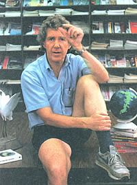

A leading researcher and futurist looks at soil, oil, water, population, and the state - and fate? - of planet Earth.
While conducting the following interview with Lester Brown, the founder and head of the Worldwatch Institute, Associate Editor Sara Pacher was worried that her tape recorder might not pick up his quiet voice. When she mentioned this concern, Lester smiled. "When you say outrageous things, " he said, "you'd best speak softly. "
"Before the year is out,"wrote Hugh Sidey in Time magazine, shortly after the Institute's 1986 State of the World Report was published last February, "Brown's presumptuous 263 page volume may be studied more intently by more people in more countries than Reagan's [State of the Union] address. And it is arguably a more accurate and provocative picture of the globe than the one sketched by the President. "
MOTHER has long been aware of the accuracy of Mr. Brown's view of the world; we made him the subject of our interview in our milestone 50th issue. Since then the audience for the Worldwatch Papers (a recent one concerned the high costs of decommissioning nuclear power plants) has grown tremendously.
Additionally, in 1985 the producers of "NOVA," the prizewinning television show that comes from station WGBH in Boston, invited Worldwatch to work with them to develop a series - to be based on State of the World for public television. This $5 million, 10 part program will air in early 1988.
It seems only appropriate, as we start on our next 100 issues of Mother Earth News, that we again inscribe a milestone with the words of this knowledgeable, down-to-earth man.
MOTHER: It's interesting to note that many of the forecasts you made during our 1978 interview - such as the drop in beef consumption, changes in land ownership patterns, and the increases in the cost of housing - have come true. Since Worldwatch keeps a sensitive finger on the pulse of the planet, what is your prognosis now? Are Mother Earth and her offspring going to survive - and, if so, in what condition?
BROWN: The future is very difficult to project now, because the rate at which things are changing is unprecedented - and those changes are a product of our advancing technology and our increasing population. For example, most of the fossil fuel that's ever been consumed has been used in my lifetime - indeed, most of it in the last 35 years. This enormous combustion of fossil fuel is literally altering the earth's chemistry. We see it in the level of atmospheric carbon dioxide, which restricts the amount of heat that's radiated out from the earth. We may be getting climate changes as a result.
We're also beginning to realize that the burning of fossil fuels, particularly coal and to a lesser degree oil, results in the production of sulphur dioxide and various nitrogen oxides. These, in turn, contribute to acid rain or - more broadly - air pollution.
And acid rain is starting to destroy forests all over the world. There are areas in West Germany that until recently were covered with trees. Now they look like scenes out of World War III. We can see the first symptoms in this country now, too. The rate of annual forest growth in Virginia, according to a recent study, has declined some 20% over the past generation.
We're also beginning to realize that fish - not only those in lakes in Scandinavia, but freshwater-spawning oceanic species in Chesapeake Bay tributaries, for example - are being affected by acid rain. This is particularly true in the spring, when fish eggs are being laid in the streams. After they hatch, the spring shower influxes of acid deposition are harming striped bass and shad as well as other species.
Acid rain also affects the earth's chemistry by releasing the aluminum that's trapped in the soil. This results in more of the metal getting into the water supply and into foodstuffs.
In early July, the 5 billionth living human
arrived on earth. As recently as 1950, there
were only half that many people.
MOTHER: Isn't aluminum suspected as a cause of Alzheimer's disease?
BROWN: Exactly. The linkage hasn't been proven yet, but the hypothesis is a very disturbing one. There are over 2 million people in this country - many in their 50s - who now have Alzheimer's. Therefore, if the links between fossil fuel combustion, acid rain, soluble aluminum, and Alzheimer's disease are real-and if it turns out that the number of people with the disease is increasing rapidly - it could lead to a revolutionary shift in energy policy.
The other source of uncertainty is the effect of population growth on natural support systems. Within the last month, the 5 billionth living human arrived on earth. As recently as 1950, there were only half that many people. The effects of this enormous increase in human numbers are becoming evident in many parts of the Third World, but particularly in Africa.
It begins with increases in human population. This leads to a decline in tree cover, either as a result of clearing land for farming or cutting trees for firewood. After a while, there aren't enough trees left to supply fuel, and the villagers begin burning cow dung and crop residues. As these events occur, natural nutrient cycles are breached. The first is that associated with trees. Trees have deep root systems, and they pull up nutrients from below the earth's surface and recycle them in the form of leaf drop, which nourishes the soil.
Next, when firewood becomes scarce and villagers begin burning cow dung and crop residues, those nutrient cycles are breached. Materials that once went back on the land to boost fertility are now being used as a source of fuel.
Naturally, the lack of soil nutrients leads to the deterioration of the soil structure. Without the organic matter to hold the soil particles together, the thin layer of topsoil needed to produce food erodes much more rapidly. Eventually, it disappears entirely. At this point, agriculture is abandoned.
Probably the most dramatic example of this can be seen in two provinces of northern Ethiopia; villagers are being forced to leave because there's not enough topsoil left to support even subsistence farming, much less a market-oriented agriculture.
This, in turn, affects yet another cycle, which is the hydrological cycle. With the vegetation largely gone and very little organic matter in the soil to absorb rainwater, the amount of water that would percolate downward and recharge the underground aquifers is reduced. Therefore, water tables begin to fall, and wells go dry. The increase in runof also reduces the amount of moisture that's evaporated. A fertile soil with heavy vegetation evaporates a great deal of moisture into the air. A barren, degraded piece of land evaporates very little. A reduction in the amount of moisture being evaporated to recharge the clouds leads, in turn, to a decline in rainfall - in other words, to a climate change, and that appears to be what's happening in much of Africa today.
MOTHER: If recent events in Ethiopia are harbingers of things to come, the scenario looks grim.
BROWN: And Ethopia is not alone. West Africa's Mauritania, which shares a border with Morocco, Senegal, and Mali, could be the first modern society to disappear - to be swallowed up by environmental deterioration. This country is situated largely in the Sahara, and the degradation of the landscape is such that there's just no way that it can produce anywhere near enough food. My guess is that it may not be too many years before it will be abandoned, and Mauritania as a country will virtually disappear.
MOTHER: So environmental degradation inevitably leads to social consequences, the least of which may well be food riots.
BROWN: Of course. Because of environmental degradation, there are 14 countries in the world that have lower grain yields now than they had in 1950. Topsoil loss has occurred on a scale sufficient to override modern inputs such as fertilizer.
On the African continent, grain production per person has declined by more than a fifth since 1967. But more serious than the decline itself is the fact that there isn't anything being done, in the form of either family planning or food production, to indicate that the decline is going to be reversed in the foreseeable future. In 1985, out of some 545 million Africans, 170 million were fed entirely on grain from abroad.
MOTHER: That is a number not much smaller than the entire U.S. population!
BROWN: And I can say with confidence that five years from now the figure will be far larger. In fact, I think turning this situation around in Africa is going to take an enormous effort, one probably greater than the Marshall Plan, which rebuilt Europe after World War II.
The Marshall Plan was centered largely around the reconstruction of Europe's physical plant: the factories and homes destroyed in the war. Most of the institutions were already in place, and there was a skilled population on hand, as well. That job was a picnic in comparison to the rebuilding of Africa, which is faced, not with war destruction, but with the ecological destruction of its basic life-support systems. There, we're dealing with a continent that is far larger, with twice the population, and with countries that have neither the institutions nor the well-developed skills needed for modernization.
MOTHER: Are we going to just write off the whole continent?
BROWN: Well, the manner in which the international community responds to the progressive deterioration of that continent will tell us a great deal about its capacity to handle other crises in the relationship between people and environmental support systems where global cooperation will be required.
MOTHER: Your recent State of the World report made a connection between a country's prosperity and its treatment of women and children - the People's Republic of China being a positive example and some African countries, where women bear 75% of the workload, being negative ones.
BROWN: What we're seeing in Africa are essentially tribal societies that not too long ago were hunting societies. In the early stages of their transition to agriculture, men hunted and women grew food. But now the hunting options are largely gone, and men have been reluctant to do what was traditionally women's work. So either they don't become very involved in agriculture, or they migrate to the cities and towns to get jobs. Therefore, in Africa you have one extreme in the role that women are playing, while China is pretty close to the other extreme.
China's done a great deal to provide opportunities for women. The educational system is wide open to them, and women are provided with family-planning services, so they are able to limit the number of their children - indeed, they're encouraged to do that. Because of these factors, they're able to take advantage of the opportunities in society to move ahead.
So what we're seeing in China is a combination of economic, environmental, and social policies that are leading to broadly based social improvements, including one of the highest life expectancies of any country in the Third World, an infant mortality rate that's dropped sharply, and literacy rates that have increased dramatically.
In fact, if we looked at nothing but the basic social indicators in China - life expectancy, infant mortality, literacy - we'd have to classify China today, not as part of the Third World, but as a part of the industrial world.
MOTHER: So if Africa is a tragedy in the making, China is a success story.
BROWN: Close to it. Of course, the Chinese aren't extraordinarily affluent, but in terms of social indicators, China is doing quite well. Its per capita grain production has increased by nearly half over the last decade, which means that China could experience two poor harvests in a row and not suffer any serious consequences. And since-unlike most of Africa-it's blessed with abundant rainfall, China may well build further on the gains made in the last decade, if it continues to follow its current food production and population policies.
What most people don't realize is that a 3% annual rate of population growth, which is seemingly innocuous, brings about a 20 fold increase in people in a century. There aren't many countries in the world whose environmental support systems could withstand that sort of population pressure. Africa has had about a third of a century of population growth of around 3%, and already its life support systems are beginning to deteriorate.
What we're headed for is an oil shock in the early 1990s that will be far more severe than any experience to date.
MOTHER: Some say our next world crisis will be a water crisis.
BROWN: In looking at the world as a whole, we now see more and more areas where the demand for water is beginning to outstrip the supply. For example, in the Sunbelt states there's growing competition between cities and farmers. Because urban dwellers can afford to pay much more per gallon of water than farmers can, farmers invariably lose in this sort of confrontation. As a result, we see a decline in irrigation in states like Arizona, New Mexico, Texas, Florida, and, recently, in California as well.
Texas and Florida have each lost about a fifth of their irrigated area just in the last six years or so. In Florida, some of the water currently is being diverted to urban and industrial uses. Furthermore, largely because of the depletion of the Ogallala acquifer, there's a lot of land in irrigation in southern Nebraska, western Kansas, northern Texas, and the eastern parts of Colorado, New Mexico, and Oklahoma that won't be under irrigation 20 years from now.
We're not the only country, of course, with water shortages. Mexico is faced with even more severe problems. In the southern portions of the USSR, the lack of water is a severe constraint on food production. Recently, the Soviets announced that they were abandoning long-standing plans to divert northward-flowing rivers southward into the Central Asian Republic, apparently because of a shortage of capital.
And to get back to China, particularly the area around Beijing and Tianjin, the water table there is dropping at about four feet a year, and the demands for water are continuing to increase.
This problem, like most, can be tied to population growth, which simultaneously increases the demand for water and reduces the supply, because it leads to cutting trees, which sets in motion the land degradation that reduces the amount of rainfall that's retained.
So, on the water front, we're going to face a lot of adjustments in the years ahead. Just as we've had to design more gasoline-efficient cars, we're going to have to breed more water-efficient crops and recognize that water consumption is becoming a serious constraint on long-term economic expansion - and on the earth's long-term carrying capacity - in the same way that energy consumption is.
MOTHER: Speaking of energy, despite the recent oil glut, Worldwatch has presented a good argument indicating that in the not-too-distant future we will have to "move beyond oil." What will that change be like?
BROWN: Over the past generation we've seen the world economy become an oil-based economy. I think it was some time in the '50s that oil overtook coal as the principal fuel. Between 1950 and 1973, world oil production increased some 7% a year - in total a five-fold increase. But now we know that the world economy in the long term will not be an oil-based economy. There simply isn't enough oil left, and already we've seen a substantial decline of some 15% or so in total world oil consumption.
So, as we move beyond oil, I think there are two things that will dominate the energy economy. First, we'll have to use energy far more efficiently than we do now. Second, we'll be depending more and more on renewable energy resources.
The petroleum age is fairly homogeneous; it's the same fuel, the same basic technology being used all over the world. But in the post-petroleum age, each country will have to fashion an energy policy based on the resources that are indigenously available.
Sweden, for example, has a long-term energy plan that centers around the use of hydropower, wood fuel, and wind power, coupled with substantial increases in energy efficiency. Brazil is concentrating on alcohol fuels from sugar cane, hydropower, and, to a lesser degree, wood. The Philippines has one of the best long-term energy programs of any country in the world, despite all the political problems they are now facing. They have probably cut their oil imports nearly in half over the last decade or so and are concentrating on the development of geothermal energy, hydropower, solar collectors, methane generators, and small, rural, electric generating plants that are fueled with wood. The wood is grown by small farmers on two to five acres on a contract basis. They plant trees, care for them, harvest them, and sell them to a small utility power plant at the agreed-upon price.
Here in the United States, we have a wide variety of renewable energy sources, and we're in a position to develop each of them.
MOTHER: Yet, with the recent drop in oil prices, I've heard it suggested that we eliminate the fuel-efficiency standards for cars. Is that likely to happen?
BROWN: The fuel-efficiency standards haven't been eliminated, but they are due to expire shortly. There are, however, many people who think they should be set much higher in the future than they've been in the recent past. What we're headed for, in all probability, is an oil shock in the early to middle 1990s that will be far more severe than any experienced to date. Sometime during that period, the world's going to wake up and discover that most of the oil in the North Sea, in the North Slope of Alaska, in Venezuela, in Indonesia, and in Nigeria is gone. At that point most of the remaining oil will be in a small number of OPEC countries in the Middle East-and suddenly that region will be back in the driver's seat, even stronger than before, and the world oil economy will become, once again, a seller's market.
MOTHER: In the meantime, the recent unprecedented drop in oil prices has been a real threat to the international banking system.
BROWN: Whenever the price of oil goes up or down rapidly, it puts a lot of stress on the international banking system. It's a very destabilizing and dangerous development. That, along with Third World debts that can't be paid and the bankruptcy of family farms, is creating tremendous financial pressures. The world banking system might be able to deal with any one of these crises, but if you get a lot of them together, at some point the survival of some of our financial institutions could be threatened. And it's uncertain whether the U.S. government would be willing or able to intervene on a sufficiently large scale to prevent a crisis should one threaten.
I have the feeling that we're moving into an extraordinarily difficult, complex period. I think we're faced with a financial day of reckoning in the not-too-distant future. And one of the things that we may be headed for as a result of the environmental deterioration, the mounting debt in the Third World, and the growing federal deficit is a redefining of national security. We may wake up to the fact that the ecological and economic threats to human security are greater than the military threat! Throughout most of the period since World War II, it's been possible for most countries to have both guns and butter, but that period may be coming to an end now, and there are many governments that can't have both.
MOTHER: But what country nowadays will choose butter over guns?
BROWN: It's true that when we look at the world economy over the past generation, we see one that's become steadily more militarized. In 1960, 4.6% of the world economy was devoted to the production of arms. By 1985, it had increased to over 6%. In real dollar terms, in 1940 world military expenditures totaled $400 billion. By 1985, they had increased to $940 billion. That's not a trivial amount of money. That sum exceeds the total income of the poorest one-half of mankind.
For many countries, however, the real threat to security is not the loss of territory through aggression, but the loss of topsoil through erosion. The most pressing danger may not be invading armies, but encroaching deserts. And many people can't quite grasp this yet. We still think that security comes from armaments. Last year, the government of Ethiopia actually spent 42% of its budget for military purposes, and this was at a time when people in the United States were holding bake sales to raise money to feed the starving Ethiopians.
MOTHER: What's causing this preoccupation with one type of threat in the face of so many others?
BROWN: The notion that mankind should be in a state of war preparedness on a continuing basis is a very modern - yet very well entrenched - concept. It began after World War II with the Cold War between the U.S. and the Soviet Union, which pulled in almost all of the industrial world and much of the Third World. At that time, we began to think of security almost exclusively in military terms, but now at least a few countries are beginning to see that real security doesn't come from having an enormous military establishment, but from having a highly productive, efficient, modern economy.
MOTHER: I guess Japan would be the prime example of that.
BROWN: Japan, which was prevented from arming by the treaty that ended World War II, now sees, I think, that this restriction was a blessing in disguise, since political influence in the world today comes from economic strength, and economic strength comes from investing in technology and in economic modernization. The Japanese, more than anyone else, realize that in the nuclear age there isn't very much you can do with military power.
MOTHER: But aren't they pretty much alone in that realization?
BROWN: Not entirely. There are three countries in the Third World that are literally redefining security, and doing so largely for economic reasons. China has reduced the share of its GNP used for military purposes by nearly half over the last decade - despite the fact that it has a 1,900-mile border with the Soviet Union. China is shifting resources away from the military sector and toward environmental restoration, family planning, technological advancement, and overall economic development. Another country that is starting to redefine security and, in effect, develop a new theory of geopolitics is Argentina. It, like China, has cut the share of its GNP being used for military purposes in half within the last three years alone. Peru appears to want to move in the same direction.
Also, as China has scored these spectacular successes in recent years, it has indirectly put a lot of pressure on the Soviet Union, because the Soviet economy is suffering a great deal. Russia's the only major industrial country in the world whose grain production is declining in absolute terms - not merely in per capita terms. Its grain production has been declining since 1978 and its oil production since 1983, so we have an economy where the production of the two major commodities is going down. The Soviet Union, with more cropland than any other country in the world, is also importing more grain than any nation in history. In some recent years, that figure has reached over 50 million tons. That's five times as much as India imported after its worst monsoon failures!
Of course, one of the things that would facilitate the adoption of economic reforms by Russia would be a relaxation of its arms race with the United States. If the Soviet Union did go ahead with economic reforms not unlike those that China has adopted, then this, too, could lead to changes in the political structure and in the governmental philosophy. With this sort of ideological softening, we might well find that reversing the trend of the past generation toward worldwide militarization could occur fairly rapidly.
The interesting thing about demilitarization is that, like militarization, it could feed on itself once it was underway.
The 1985 world military expenditure - $940 billion - exceeded the total income of one-half of mankind.
MOTHER: Do you mean that if a country's demilitarization is successful in turning its economy around, its neighbors might feel less threatened and follow its example?
BROWN: Possibly. But it may not have anything to do with whether a country feels threatened or not. As I've said, China decided to cut back on military expenditures, reduce its army, and shift resources into the civilian sector, and these actions weren't contingent upon any negotiation or arms reduction with the Soviet Union. In fact, the Soviet Union has been militarizing even as China's been demilitarizing. At some point, the Soviets may also say to themselves, "What are we so concerned about?" Or, of course, Washington may decide that building up a huge military machine doesn't make sense anymore. I think it's obvious that militarization cannot continue at the current rate. If we keep increasing the share of the global economy being used for military purposes, then there's not much hope for mankind. Apart from the risk of blowing the world up at some point, we'd eventually divert so much investment capital, scientific resources, and management know-how from the nonmilitary sector that economies would begin to deteriorate throughout the world. In many ways, we're on a self-destruct course now.
MOTHER: But what about the power structure that makes money on armaments?
BROWN: There's a very strong and effective arms lobby in the world today, and it's not limited to the United States, but it certainly has reached a level of development here that we've not seen before. That lobby won't be easy to overcome, but people are going to have to say, "We've had enough. We just don't want to keep spending more and more on defense and cutting back on education, health, agriculture, and social programs across the board." And I think we may be approaching that point.
In fact, I think we're going to have to become, as a society, much more politically active than we have been. If we're concerned about what's happening with acid rain, if we're concerned about what the arms race is doing to the economy, if we're concerned about the possible linkage between the use of fossil fuels and climate change, then I think we have to become politically active in order to bring about changes in policy that will help sustain the economy over the long term.
Let me give you an example. In 1976, President Ford signed the automobile-fuel-efficiency legislation, and - partly as a result - the average fuel efficiency of new cars sold in the United States in 1985 was nearly double what it had been in 1973, which was the year before the OPEC price hike.
There are many other areas where a similar national effort would improve the prospect for the long term. There's no reason why we shouldn't have a national beverage-container recycling bill. It would save energy, reduce pollution - air pollution, in particular - and also reduce the waste disposal costs that many cities are facing. One of the consequences of a throw-away society is the growing amounts of garbage that cities have to haul to landfills further and further away, causing costs to climb astronomically. All of these factors argue for moving toward the systematic reuse of materials. It's one thing to save your aluminum cans or your waste paper for recycling, but if there isn't a viable, stable, long-term, national market for these materials, then one day you'll find there's no place for your stack of papers to go.
And that's where I think we fail. At the individual level, we tend to concentrate on what we can do ourselves rather than trying to change the system, and that's why I think we have to become more politically active.
Population, for example, is an issue that most of us can have some influence on, at least when we're at the age of making childbearing decisions. But it's also an area where U.S. policy at the national and international levels is important, because it so directly affects global population trends.
MOTHER: From what you've been telling me then, Mother Earth is suffering from a rapidly growing human population that is not only eating away at the beauty of the planet and spewing out poisons, but destroying its host's basic abilities to sustain life. The prognosis doesn't look good.
BROWN: When considering the world as a whole, one does have to be impressed with the losses at this point. However, there are also the occasional gains - and some of them have been dramatic! I mentioned earlier that we're seeing in China - mostly as a result of progress over the past decade - a society with about a billion people moving into the industrial world. The gains in energy efficiency for the world as a whole have been most impressive since the late '70s.
But these postive changes are still unbalanced by world environmental deterioration - whether it be soil erosion, rising carbon dioxide levels in the atmosphere, or increases in acid rain and forest die-off: We have the African continent going downhill with nothing in sight to arrest that decline. In the absence of a major successful intervention in that process, catastrophe lies ahead - possibly on a scale that we've not experienced before.
And, again, the curves are so steep! The problems are accelerating so rapidly and on such a large scale that they're very difficult to assess. We can say, intellectually, that a population growing at 3% a year will multiply 20 times in a century. It's quite another thing to visualize what that might translate to in terms of the relationship between humans and the support systems on which they depend.
EDITOR'S NOTE: State of the World '86 is available for $9.95 from Worldwatch Institute, 1776 Massachusetts Ave., Washington, DC 20036. An annual subscription to all Worldwatch publications is $25.
|
 Lester Brown, head of the Worldwatch Institute, indicates how thin the topsoil is in some parts of the world. Brown recently won a $250,000 award from the prestigious MacArthur Foundation for his outstanding work. |
|
|